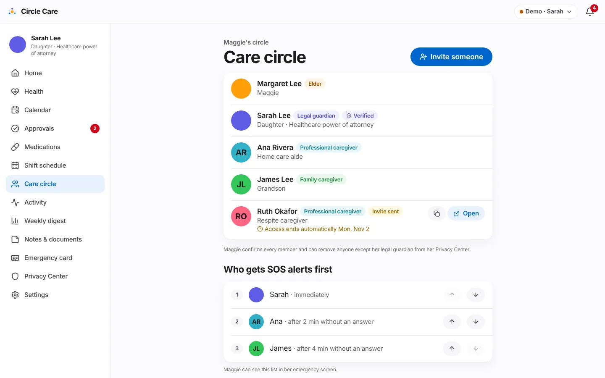
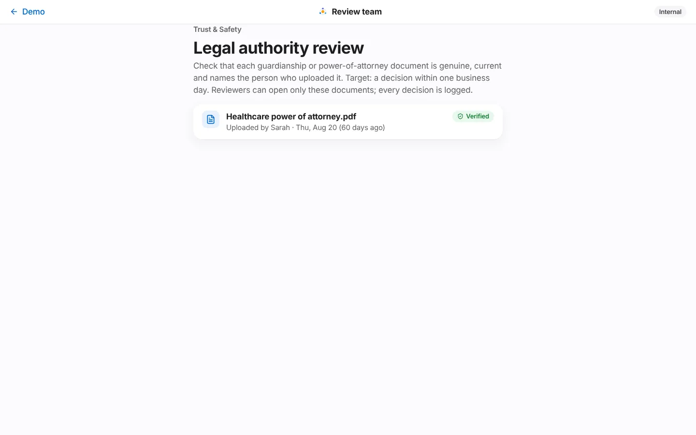

F-09 · Membership, roles, invitations and legal-authority verification
Personas
Sarah (manages the circle), Maggie (confirms and removes members), invited helpers (Ruth), internal review team
Status
Built in prototype — identity checks and invite delivery are simulated
Related stories
CC-15 create a care circle · CC-16 invite by role · CC-17 accept an invitation · CC-18 role permission matrix · CC-19 single enforcement point · CC-20 who can see my data · CC-21 revoke access · CC-23 upload legal authority · CC-24 guardian verification (review console) · CC-25 time-limited access · CC-48 SOS escalation order
What. The care circle is the set of people allowed to help Maggie, each with a role that decides what they can see and do. The guardian invites people by role, can make access temporary, and sets the SOS order. Maggie sees everyone and can remove anyone except her legal guardian. A guardian's legal powers depend on a power-of-attorney or guardianship document that an internal review team verifies.
Why. Shared family logins and group chats give everyone everything. Care requires the opposite: the right person sees the right thing, only for as long as needed, and the elder can see and change it.
Business value. Role-based, time-bound access is what makes Circle Care safe to recommend to agencies and acceptable to elders. Guardian verification protects against the most serious abuse risk: someone falsely claiming authority over an older adult.
Sarah opens Care circle — "Maggie's circle". Each member shows a role badge (Elder, Legal guardian, Family caregiver, Professional caregiver), Verified for a verified guardian, Invite sent for pending invitations, the relationship, and "Access ends automatically Mon, Nov 2" for temporary access.
For pending invitations she can copy the invite link or Open it.
Who gets SOS alerts first lists the escalation order — "Sarah · immediately", "Ana · after 2 min without an answer", "James · after 4 min without an answer" — with up/down arrows. "Maggie can see this list in her emergency screen."
Legal authority lists POA or guardianship documents with In review, Verified or Needs resubmission. In the demo, In review items have a Simulate approval button.

The care circle with roles, a pending time-limited invitation and the SOS order.
Invite someone → Invite to Maggie's circle: Name, Mobile number or email, Role (Family — "Sees today's medicines, tasks, notes and alerts." or Professional — "Sees today's plan only during their shifts."), How they're related (optional), and Temporary access with an Access ends date (default 14 days ahead).
"The invite link works once and expires in 72 hours. The message contains no health information. Maggie is notified." → Send invite ("Invite sent to Lena Park"). The member appears as Invite sent.
Members with an end date show it everywhere they appear. When the date passes, the rules engine revokes access automatically and writes "Circle Care removed Ruth Okafor's access (time limit ended)" to the access log.
In her Privacy Center, Maggie taps Remove next to any member except Sarah → "Remove Ana? Ana will stop seeing your information right away, on every device. Sarah will be told." → Remove Ana / Keep Ana.
The member is revoked, removed from the SOS chain, and listed under "No longer has access". "Sarah is your legal guardian. Her access can only be changed through the legal process, not in the app."
Guardian verification and review console (CC-23, CC-24)¶
Sarah uploads a document of type Legal authority in Notes & documents. She is told: "We received "court-order.png". Our review team usually responds within one business day."
A reviewer opens the internal Review team console (/app/review) — "Legal authority review". "Check that each guardianship or power-of-attorney document is genuine, current and names the person who uploaded it. Target: a decision within one business day. Reviewers can open only these documents; every decision is logged."
Verify → the document and the uploader become Verified; Maggie and Sarah are told "Sarah's legal authority was verified."
Reject → choose a reason the uploader will see → Reject and notify. Sarah sees "court-order.png couldn't be verified: It has expired. Upload a new copy as "Legal authority"."

The internal review console sees only legal-authority documents.
Elder and guardian (circle: invite) — the UI offers invites to the guardian
policy.ts
Who can revoke
Elder and guardian (circle: revoke); the elder and the guardian themselves can never be revoked
store.revoke
Roles offered in the invite form
Family, Professional
Circle.tsx
Invite link
Single use, 72-hour expiry
Invite.tsx
Temporary access
expiresOn date; revoked automatically the day after
evaluate()
Pending member becomes active
When they accept the invitation, or when the guardian approves a member request
acceptInvite, decide
SOS order
Guardian re-orders; Maggie can suggest changes; revoked members are removed from it
CC-48
Rejection reasons
The name doesn't match the guardian's name · The document is unreadable or cut off · It isn't signed or certified by a court · It has expired · It's the wrong type of document
The single source of truth is MATRIX in src/data/policy.ts, read through can(state, actorId, action, resource). Every data-changing store action is guarded; refused actions change nothing and are written to the access log as denied. The full table, rules (pro@shift, ALWAYS_SHARED) and open design questions are in the Permission matrix; a summary is in Security & privacy.
The review console lists only legal-authority documents — nothing else about the elder. Every decision is logged as the actor "Circle Care review team".
Guardian invites a new member · CC-67 upload checks file type… (legal-authority upload) · CC-24 review team rejects with reason; guardian told to resubmit · Elder pauses sharing…
Unit
rules.test.ts — ends time-limited access automatically (CC-25). policy.test.ts — generated tests for every cell of the matrix (elder, guardian, family; caregiver on and off shift) · unknown and removed people get nothing · only the review team can review legal documents
Identity verification and, where required, guardian approval before access
The circle page says "Until documents are verified, a guardian has family-member access only", but the code does not downgrade an unverified guardian — verification only gates consenting on Maggie's behalf
Enforce guardian powers only after verification
The guardian's Care circle page has no remove button, although the suspicious-access alert says "remove their access in Care circle"; only Maggie can remove members (from her Privacy Center)
Add removal to the guardian's circle page
The elder has no invite screen (the matrix allows it)
Elder-initiated invitations
Simulate approval button on the guardian's page
Removed; a separate internal app with its own authentication, MFA and audit